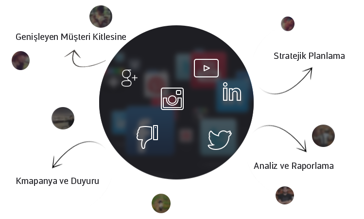

Özellikle son dönemde çok popüler olan sosyal medya sitelerinin burada ne kadar önemli olduðu tartýþýlmaz. Hokka web olarak firmalar için sosyal medyanýn ne kadar önemli olduðunu biliyoruz. Profesyonel kadromuz ile firmalarýn sosyal medyada etkili þekilde kampanya ve duyurularýnýn yapýlmasýný saðlýyoruz. Sizler için sosyal paylaþým siteleri ; Facebook, Twitter , Ýnstagram gibi sosyal paylaþým sitelerini takip ederek etkili çalýþmalar yürütüyoruz.
Müþterilerimizin marka bilincini geniþletmek ve satýþ grafiðinizi artýrmak için etkili çalýþmalar yürütüyoruz. Firmanýzý sosyal medya sitelerine her zaman aktif olmasýný saðlýyor ve hedef kitlenizle etkileþime geçiriyoruz. Ayrýca sosyal medya reklam kampanyalarýnýzý yürüterek etkili bütçe planlamanýzý saðlýyoruz. Sosyal medyada firmanýzýn bilinirliðini artýrarak yapacaðýnýz duyuru ve kampanyalarýn daha çok kiþiye ulaþmasýný saðlýyoruz.
Sosyal medyada kampanyalar hazýrlarken hedef kitlenizi göz ardý etmeden hedef kitlenizin istekleri doðrultusunda çalýþmalar yürütüyoruz. Türkiye sosyal medya kullanýmýnda Avrupa sýralamasýnda yer almaktadýr. Ülkemizde sosyal medya kullaným oraný artmaktadýr. Sizlerde firmanýzýn sosyal medya sitelerine aktif olarak paylaþýmlar yapmasýný ,kampanyalar hazýrlamasýný etkili reklamlar yürütmesini isterseniz firmanýzý Hokka web’e emanet edin. 
.
Sosyal medya sitelerinde kullanýcýlar ile bire bir etkilime geçebilir ve feedback analizleri yapabilirsiniz. Kullanýcýlar ile aktif olarak iletiþim kurmak yapacaðýnýz kampanyalarý þekillendirirken sizlere fayda saðlayacaktýr. Sosyal medyada dinamik bir ziyaretçi kitlesi bulunmaktadýr bu kitleye yönelik kampanyalar ile bu dinamik kitlenin dikkatini çekebilirsiniz.
Sosyal Medya Firmanýza Ne Kazandýrýr ?
• Sosyal medyayý etkili kullanarak dinamik bir müþteri kitlesine hitap edebilirsiniz.
• Sosyal medyayý aktif olarak kampanyalarýnýzý ve duyurularýnýzý geniþ bir kitleye duyurabilirsiniz.
• Sosyal medyayý aktif olarak kullanmak marka bilinirliðinizi artýrýr.
• Sosyal medya ile birlikte satýþ grafiðiniz artar.
• Sosyal medya ile interaktif reklamlar ile hedef kitlenize doðrudan hitap edersiniz.
• Kullanýcýlar ile doðrudan etkileþime halinde olursunuz.